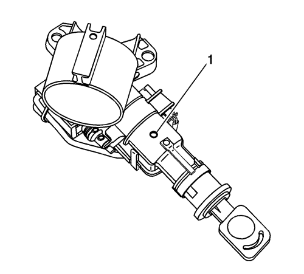

Cruze
Sustitución del cilindro de la cerradura de encendido
Procedimiento de desmontaje
Desconecte el cable negativo de la batería. Consultar
Desconexión y conexión del cable negativo de la batería
→
sin sistema de arranque/parada
.
Retire la tapa de revestimiento inferior de la columna de dirección. Consultar
Sustitución de la cubierta de revestimiento inferior de la columna de dirección
.
Introduzca la llave en el cilindro de cierre del encendido y gire la llave a la posición MARCHA.

Libere el retén a través del orificio de acceso de la carcasa del cierre (1) con una llave Allen pequeña o una herramienta de enganche similar.
Desmonte el cilindro de cierre de encendido de la carcasa de cierre.
Procedimiento de montaje
Si está instalando un nuevo cilindro de cierre de encendido, codifique el cilindro de cierre. Consultar
Codificación de la llave y del cilindro de cierre
.
Gire la llave a la posición MARCHA e introduzca el cilindro de cierre de encendido en la carcasa del cierre.
Gire la llave a la posición BLOQUEO y retire la llave del cilindro de cierre del encendido.
Monte la tapa de revestimiento inferior de la columna de dirección. Consultar
Sustitución de la cubierta de revestimiento inferior de la columna de dirección
.
Conecte el cable negativo de la batería. Consultar
Desconexión y conexión del cable negativo de la batería
→
sin sistema de arranque/parada
.
© Copyright Chevrolet. Reservados todos los derechos